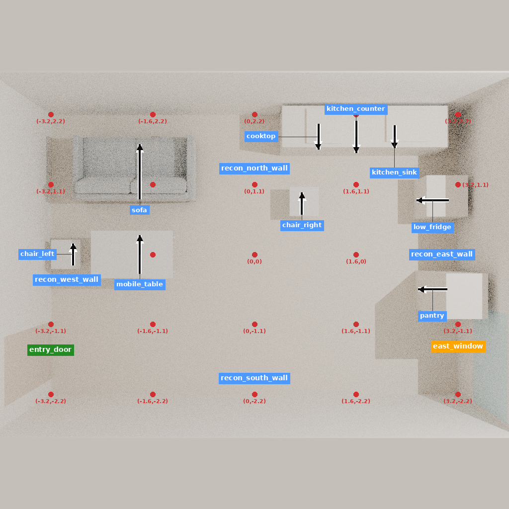
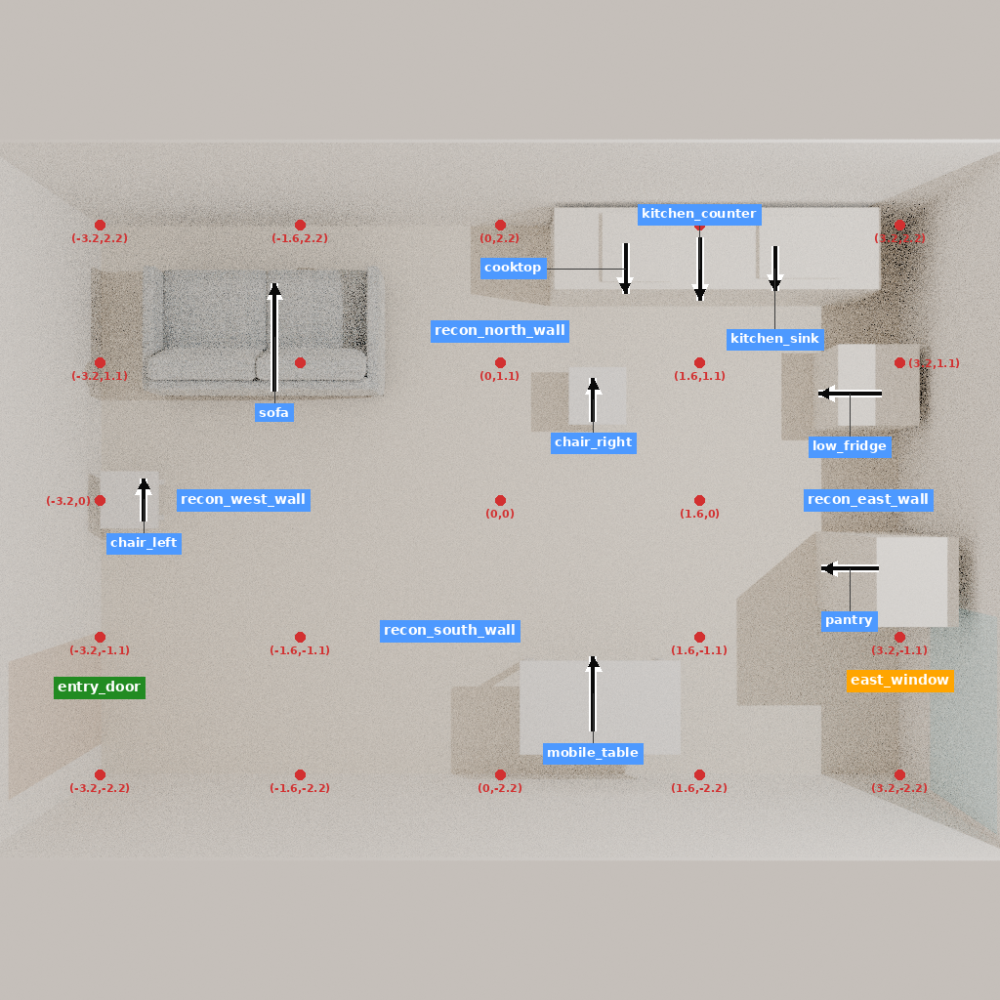

上一轮主要重述 Git 进度，没有新增机制证据。本轮继续原实验输入，不添加新房间或教师答案：两种冻结状态完成原生 RoomScene → Drake → Blender 导出、五视图渲染和原生标签绘制，再用真实模型 processor 编码。没有调用实验模型、训练、付费 API 或开启 GPU。
| 事项 | 结果 | 边界 |
|---|---|---|
| 新增原生观察 | 两种状态、10 张最终图像 | 同一 Paper 开发房间的保存状态；不是两个新房间。 |
| 版本化材料 | 原 24 单元、68 组件全部保留；更新并实际编码 12 个组件 | 连同上一批的状态共覆盖 4 单元、3 种三维状态；其余组件保留原样，本批未重新编码。 |
| 判断监督观察 | 第 08、09 单元新增可用五视图 | 原有 6 个判断单元有原图/等价图，现在另有 2 个使用明确标记的新渲染；不能称为 8 个原图恢复。 |
| 监督公平性 | 68 组件的目标、原目标 token、损失权重和教师前缀不变；同单元两组的图像张量一致 | 编码时用教师判断只检查训练格式边界；不是模型自行生成的判断，也不是推理效果。 |
| 原始证据 | 原资源包 34 个文件逐项哈希仍一致；原材料 SHA256 不变 | 保留原语料，不把新渲染冒充旧像素。 |
原完整原图/已证等价图仍为 9/24 单元；另有 4 个单元使用这两批明确版本化的重建观察，合计可定位观察为 13/24。两类不能混成“原始输入已完全复原”。仍有 14 个单元没有判断目标，本轮没有补写它们。


第 08 和第 10 单元的完整冻结三维状态哈希相同，因此共用同一套新渲染；各自原始任务和历史消息分别保留。它们不是独立场景，也不是仅改变一个任务变量的严格因果试验。第 08 的既有目标是移动桌子，第 10 的既有目标是归位椅子。
| 状态 | 导出 | 五视图 | 完成标注 |
|---|---|---|---|
| 08 | 24.77 秒 | 259.79 秒 | 5.84 秒 |
| 09 | 26.41 秒 | 243.49 秒 | 5.73 秒 |
12 个组件的实际 processor 编码耗时 27.63 秒，进程峰值 RSS 897916 KiB。两次渲染采样进程树峰值分别约 630 MB、630 MB。它们是 CPU 输入准备成本，不能当作方法效率优势或完整生成的资源测量。
第一次标注被过早启动，在渲染未结束时因缺视图失败，未写入标注；失败记录和约 38.11 秒耗时保留。渲染没有重启。随后增加完成回执和图像哈希检查，等渲染真实结束后才完成标注。这是调度修正，不是算法改进。
为保留数据盘余量，校验最终图像后删除三份可重建的 blend 中间文件（本批两份、上一批一份），总文件大小 31,225,488 字节。最终图像、状态、资产、代码与回执都保留；旧研究输出没有删除。恢复命令记录在 commands.json，中间文件需要重新导出，不能声称仍在本地。
候选区别仍是：相同监督下的直接动作模型，同时辅助学习判断；与动作显式读取自行生成判断的模型比较。前者目标可写作 L(D|X)+L(A|X)，后者在有原始判断的样本上为 L(D|X)+L(A|X,D)。当前代码使用普通交叉熵，本轮没有证明后者更好。缺判断样本的处理、实际自由输出及完整场景效果不能由本次编码代替。
本轮补读 Scene-Designer 官方 理由标注文件全部 962 行，并定向核对论文数据构造。它已经将固定目标动作提供给标注者，并要求不替不良动作编造好处。因此，“忠实解释动作、区分意图与执行结果”本身不足以成为新贡献；需要实际证明模型能选择更好的动作或以更低总成本完成房间要求。
本次没有把学术主张扩大为新的算法。它使两个已有判断样本终于具备真实、可核验、两组共享的三维观察。下一步应接真实模型的判断—工具执行轨迹，保留同知识基座、普通规则/搜索和同监督直接动作强对照。格式修复必须共同使用；完整任务收益必须由独立房间检验。不能继续用 CPU 检查数量或这同一房间的反复恢复代替效果实验。
当前新宿主仍只验证家具阶段，完整多阶段自由生成未完成；全部材料仍属开发，尚不满足扩大训练或宣布 CVPR 贡献的条件。本批不请求开启 GPU。
材料与编码结果 · 逐组件编码 · 状态与图像绑定 · 独立文件和材料复核 · 实际命令 · 阅读范围 · 过早标注的失败记录 · 中间文件清理 · 第一份中间文件清理